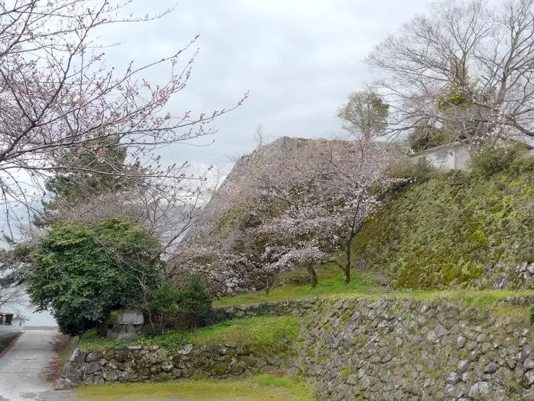
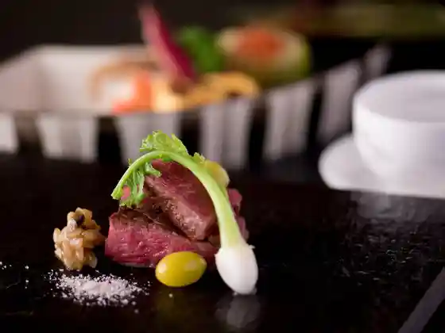
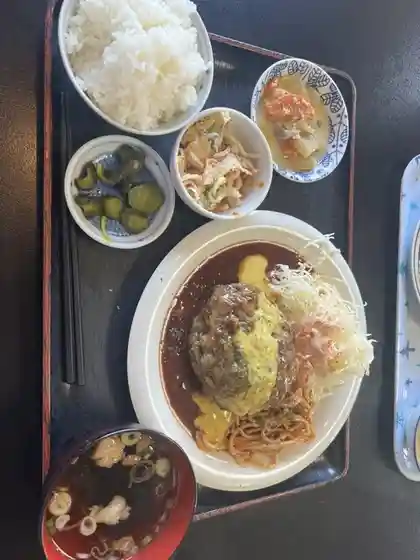
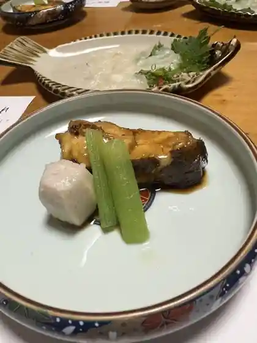
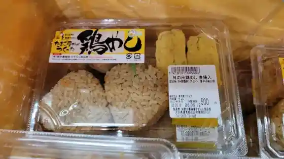
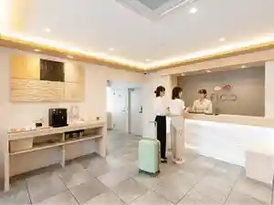
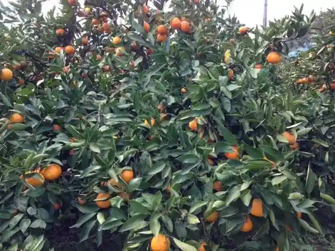

Hiji
Hiji · Oita
Hiji
Highlighted on the Oita map.

Dining
日出町的山荘
Hinode Machi Azuchi Sou

とん吉
Ton Kichi

でんすけ食堂
Densuke Shokudo
幸喜屋
Yukiyoshi Ya
マインズ
Mainzu

能良玄家
Nou Ryou Gen Ie
暘谷亭
You Tani Tei
ハーベストテーブル
Haabesutoteeburu

すずらん食品館
Suzuran Shokuhinkan
裏リッチヒルズ
Ura Ritchihiruzu
ホテルソラージュ
Hoterusoraaju
グランヴィリオホテル 別府湾 和蔵
Guranviriohoteru Beppu Wan Wazou
グランドメルキュール別府湾リゾート＆スパ
Gurandomerukyuuru Beppu Wan Rizooto & Supa
デカ弁 日出店
Deka Ben Hinode Mise
とおせんぼ
Toosenbo
ダイニング&カフェ ぽんぽこ
Dainingu & Kafe Ponpoko
万来
Banrai
大神ファーム レストラン
Daijin Faamu Resutoran
パニエ
Panie
地鶏の店 ひでさん 綜本店
Jidori No Mise Hidesan Sou Honten
ソリスタ
Sorisuta
幸喜屋うどん
Yukiyoshi Ya Udon
nicoドーナツ 日出店
Nico Doonatsu Hinode Mise
豊後ラーメン 二刀竜
Bungo Raamen Ni Katana Ryuu
カメノス
Kamenosu
ラーメン ごくまる シーガーデンひじ店
Raamen Gokumaru Shiigaaden Hiji Mise
パン工房 ぶどうの樹
Pan Koubou Budouno Ki
ラーメン五九〇 日出店
Raamen Go Kyuu (maru) Hinode Mise
ジョルノス
Jorunosu
味楽亭 日出店
Aji Raku Tei Hinode Mise
MY MELODY & KUROMI Cafe Terrace
MY MELODY & KUROMI Cafe Terrace
真清水Cafe
Cafe
シーサイドダイニング 別府八景
Shiisaidodainingu Beppu Hakkei
ハッピーカフェ
Happiikafe
炭仙人
Sumi Sennin
お好み焼き木馬
O Konomi Yaki Mokuba
インディゴ
Indigo
焼とり凡 日出店
Yaki Tori Bon Hinode Mise
merry coffee
merry coffee
トキハインダストリー 日出町店
Tokihaindasutorii Hinode Machi Mise
サーカスキッチン
Saakasukitchin
お好み喫茶 輪
O Konomi Kissa Wa
ブレッドハウス 日出店
Bureddohausu Hinode Mise
味楽苑
Aji Raku En
寅寅寅
Tora Tora Tora
コスタ デル ソル ひじ
Kosuta Deru Soru Hiji
モコモコ シーガーデン日出店
Mokomoko Shiigaaden Hinode Mise
鈴木養鶏場
Suzuki Youkei Ba
マノア カフェ
Manoa Kafe
アリラン食堂
Ariran Shokudo
Lunch＆Cafe SOSHIJI
Lunch&Cafe SOSHIJI
志高
Shidaka
丈ちゃん
Take Chan
大分トラピスト修道院製菓工場
Ooita Torapisuto Shuudouin Seika Koujou
帯刀の庄
Taitou No Shou
やまが亭喜楽
Yamaga Tei Kiraku
cafe de ALL
cafe de ALL
大黒や
Daikoku Ya
テイクアウトピザ専門店 Pizza Glee 日出店
Teikuautopiza Senmonten Pizza Glee Hinode Mise
炭火焼鳥 銀次郎
Sumibi Yakitori Ginjirou
オルメカ
Orumeka
ギャラリーKAN
Gyararii Kan
居酒屋やっさん
Izakaya Yassan
ウエルカム イノウエ 旬の館ふれあい日出店
Uerukamu Inoue Jun No Kan Fureai Hinode Mise
輝麺 一八うどん
Teru Men Ichihatsu Udon
寿司めいじん 日出店
Sushi Meijin Hinode Mise
うちだ屋 日出店
Uchida Ya Hinode Mise
茶々丸
Chachamaru
なにわ屋
Naniwa Ya
POMPOMPURIN DINER
POMPOMPURIN DINER
セブンイレブン 日出インター店
Sebun'irebun Hinode Intaa Mise
かま田け
Kama Ta Ke
二の丸館
Ni No Maru Kan
ツワラの食卓
Tsuwara No Shokutaku
酒と和み あすのや
Sake To Nagomi Asunoya
マクドナルド 日出店
Makudonarudo Hinode Mise
ジョイフル 日出店
Joifuru Hinode Mise
SUMOMO BAKERY 日出店
SUMOMO BAKERY
ZaZa
ZaZa
福ちゃん唐揚げ 日出店
Fuku Chan Karaage Hinode Mise
山豆苑
Yamamame En
はんなりの香暮れ家 萌の華
Hannarino Kaori Kure Ie Hou No Hana
焼肉の駅元山
Yakiniku No Eki Motoyama
厨
Zu
赤松屋
Akamatsu Ya
tippu
tippu
朝市食事処
Asaichi Shokuji Tokoro
魚商 福住也
Gyoshou Fukuzumi Ya
ベッセル
Besseru
農産物加工場直売所
Nousanbutsu Kakou Ba Chokubai Tokoro
シーガーデンひじ
Shiigaaden Hiji
ポッポおじさんの大分からあげ 日出店
Poppo Ojisanno Ooita Karaage Hinode Mise
魚民 日出店
Uotami Hinode Mise
グリーンカウンター
Guriinkauntaa
みっちゃんからあげ 日出駅前店
Mitchankaraage Hinode Ekimae Mise
ぼん
Bon
キャラフルマルシェ
Kyarafurumarushie
シャトレーゼ 大分日出店
Shatoreeze Ooita Hinode Mise
お菓子の菊家 日出駅前店
O Kashi No Kiku Ie Hinode Ekimae Mise
からあげ 笑味ちゃん
Karaage Warai Aji Chan
竹のい食堂
Take Noi Shokudo
ほっともっと 大分日出店
Hottomotto Ooita Hinode Mise
阿部商店 焼肉センター
Abe Shouten Yakiniku Sentaa
サンリオnakayokuショップ
nakayoku
味彩
Aji Sai
アリタ商店
Arita Shouten
ダイニング酒場 笑
Dainingu Sakaba Warai
ひじホルモン
Hiji Horumon
タコ平 本店
Tako Taira Honten
たこ屋たつ丸
Tako Ya Tatsu Maru
お食事処・ゆう庵
お食事処・ゆう庵
Casa del viento
Casa del viento
えぐちのおべんとう
Eguchinoobentou
チプシー
Chipushii
信
Shin
ナトリ
Natori
からあげ 和幸
Karaage Kazuyuki
ピアニッシモ
Pianisshimo
cafe Mori no naka
cafe Mori no naka
まめな豆や
Mamena Mame Ya
GOHANYA とわや
GOHANYA
吉
Kichi
炭火焼和寿
Sumibi Yaki Kazutoshi
小麦工房さつき
Komugi Koubou Satsuki
ピッツェリア白馬の杜
Pittsueria Hakuba No Mori
loopthings
loopthings
魚盛別館 食事処 ぷかぷか
Sakana Jou Bekkan Shokuji Tokoro Pukapuka
もっちゃん
Motchan
パンと焼き菓子のお店 sucre
Pan To Yaki Kashi Noo Mise Sucre
食の庵 彩海
Shokuno Iori Ayami
pomu
pomu
ユキパン屋
Yukipan Ya
たき
Taki
まんぷく笑店
Manpuku Warai Mise
Kaisen Ippachi
Kaisen Ippachi
Ogami Farm
Ogami Farm
Tekizanso
Tekizanso
Restaurant Solista
Restaurant Solista
Kanosen
Kanosen
Kokiya
Kokiya
Zen no Eguchi
Zen no Eguchi
Tatewaki no Sho
Tatewaki no Sho
Yogokutei
Yogokutei
Nihonryori Shiroshita
Nihonryori Shiroshita
Minds
Minds
Norakuroya
Norakuroya
Joyfull
Joyfull
Mirakuen
Mirakuen
Kaisen Sushi Dining Sushi Meijin Hiji
Kaisen Sushi Dining Sushi Meijin Hiji
Senmaru
Senmaru
Ramen Gokumaru Hiji
Ramen Gokumaru Hiji
Happy Cafe
Happy Cafe
Sunahama Shokudo
Sunahama Shokudo
Nana peace
Nana peace
Deca Ben Hiji
Deca Ben Hiji
Kokiya Udon
Kokiya Udon
Jochan
Jochan
Hotel Resorts Beppuwan Lounge la Mere
Hotel Resorts Beppuwan Lounge la Mere
Showado
Showado
Kankoku Hiroba
Kankoku Hiroba
Yasuragi
Yasuragi
Dining Room Shiki
Dining Room Shiki
Ishigama Bread Kobo Moko Moko Hiji
Ishigama Bread Kobo Moko Moko Hiji
Karaoke Club Dam Oita Hinode
Karaoke Club Dam Oita Hinode
Green Counter
Green Counter
Fried Chicken Ichban
Fried Chicken Ichban
Nakatsu Karaage Ichibandori Hideh Branch
Nakatsu Karaage Ichibandori Hideh Branch
Izakaya Torikushi Hiji
Izakaya Torikushi Hiji
Shinzaburo
Shinzaburo
Dosanko
Dosanko
Gallery Kan
Gallery Kan
Tanuki No Yakara
Tanuki No Yakara
Meisui Handmade Tofu Yamazuen
Meisui Handmade Tofu Yamazuen
Love
Love
Hideway Izakaya Moe No Hana
Hideway Izakaya Moe No Hana
Charcoal Grilling Waju
Charcoal Grilling Waju
Jugomangoku Hiji
Jugomangoku Hiji
Okonomiyaki Friend
Okonomiyaki Friend
Zui Zui Ken
Zui Zui Ken
Asuka Udon Akamatsu Toge
Asuka Udon Akamatsu Toge
Toraya
Toraya
Tosenbo
Tosenbo
Tea Copan
Tea Copan
Kappo Nakamuraya
Kappo Nakamuraya
Tsukinoya
Tsukinoya
Kokiyaudonten
Kokiyaudonten
Baseone
Baseone
Mirakutei Hiji
Mirakutei Hiji
Ishokuya Shin
Ishokuya Shin
Robatayaki Ajikatsu
Robatayaki Ajikatsu
Imasa
Imasa
Kyouraku
Kyouraku
Karaoke Kayo Stage Spotlight
Karaoke Kayo Stage Spotlight
Spa Village Hiji
Spa Village Hiji
Butamannomisekozakihijiten
Butamannomisekozakihijiten
Bona Apetito
Bona Apetito
Bakery Budonoki
Bakery Budonoki
Kikuya Hiji Ekimae
Kikuya Hiji Ekimae
Izakaya Irori
Izakaya Irori
Olmeca
Olmeca
Bread House Hiji
Bread House Hiji
Nagi
Nagi
Mashimizu Cafe
Mashimizu Cafe
Toyooka Food
Toyooka Food
Stone Oven Bakery Mokomoko Sea Garden Nisshutsu
Stone Oven Bakery Mokomoko Sea Garden Nisshutsu
Seiryuken
Seiryuken
Stay
HOTEL AZ 大分日出店
HOTEL AZ

fico HIJI
fico HIJI

コスタ デル ソル ひじ
Kosuta Deru Soru Hiji
グランドメルキュール別府湾リゾート＆スパ
Gurandomerukyuuru Beppu Wan Rizooto & Supa
Ｃａｓａ ｄｅｌ ｖｉｅｎｔｏ
Casa del viento
スパ＆リゾート ホテルソラージュ大分・日出
スパ&リゾート ホテルソラージュ大分・日出
Sights
Ishi Korotachi no Zoo
Itogahama Sapputerasu
Hamonii Land
Sekiguchi Tourist Farm

Matsumoto Farm
Oita Torapisuto Shudoin
Nikaido Art Museum
Orasho Junrei no Michi
Kyozuka Yama (Kyozukayama)
Daijin Farm
Hotel & Resorts BEPPUWAN
Hotel Soraju Oita Hiji
Akamatsu Onsen
Zabieru no Michi
Ni no Maru Kan
Hiji Joshi (Hijijoshi)
Itogahama Seaside Park
Matsuya Tera (Shokuji)
Kimon Yagura (Kimonyagura)
Chido Kan (Chidokan)
Ningen Gyorai (Kaiten) Daijin Kunren Kichiato
Fukae no Asa City
Azuchi So (Tekizanso)
Ganjo Shu Tera (Ganjojuji)
Ki no Do Atago Shrine (Tsuji no Doatagojinja)
Uomi Sakura (Uomizakura)
Kaiten Shrine (Kaitenjinja)
Kanawa Shima (Kanawajima)
Wakamiya Hachiman Sha Romon (Wakamiyahachimansharomon)
Hiji Han Seibai Ba Atochi (Hijihanseibaijoatochi)
Renge Tera (Rengeji)
Yokotsu (Yokozu) Shrine
Tomi Inari Shrine (Tomiinarijinja)
Fu Shima (Ukishima) Hachiman Shrine
Hachi Tsushima Shrine
Oyama Seki Shrine (Oyamazumijinja)
Eri Ko Tei
Akamatsu Hashi
Hayamizu Dai Iseki (Sozudaiiseki)
Ryusen Tera (Taki Rentaro no Haka)
Yamada Yusui
Hiji Town Hall